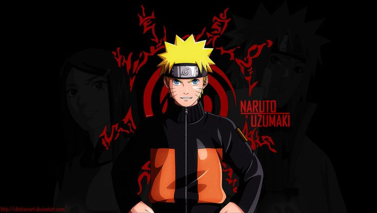
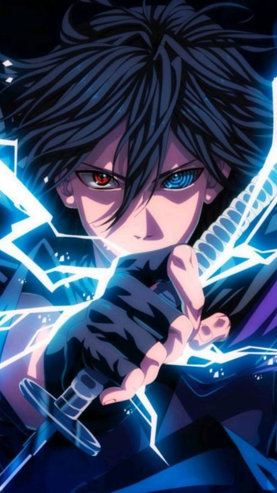
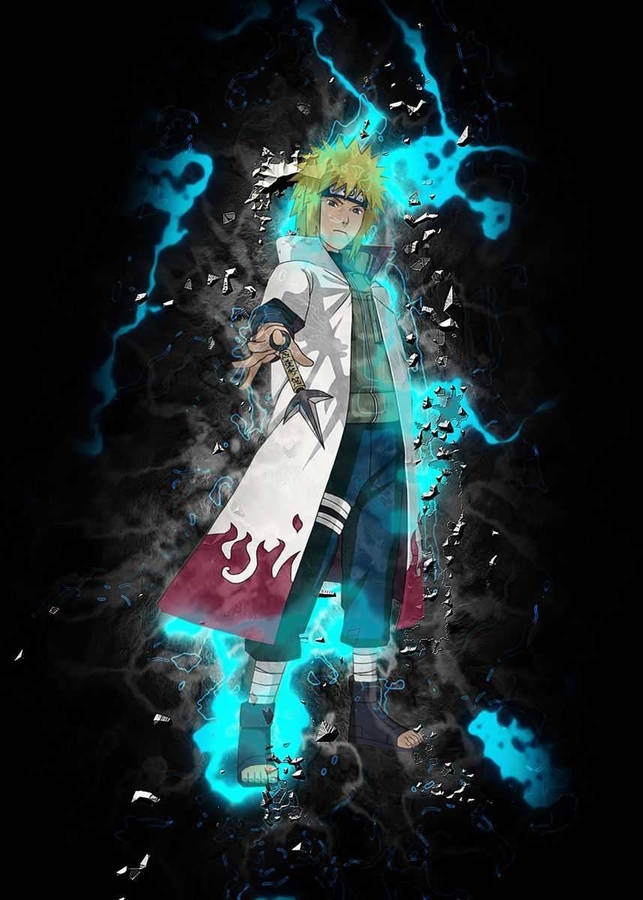
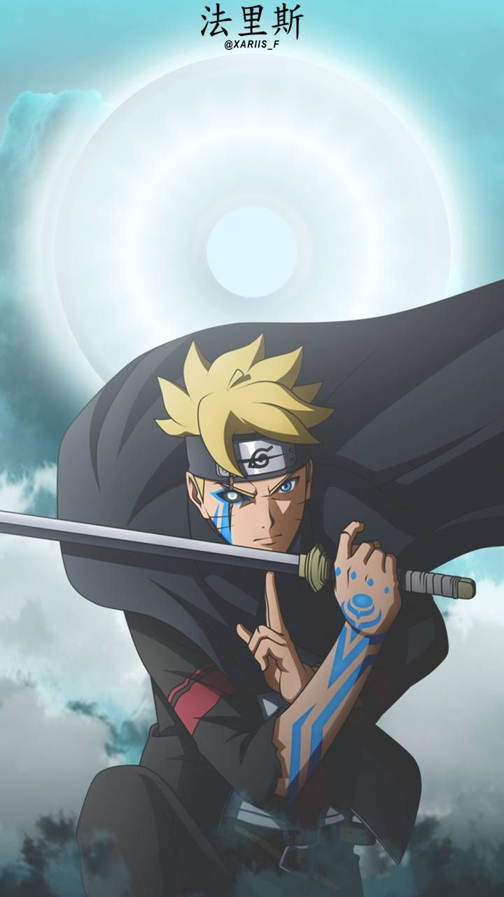
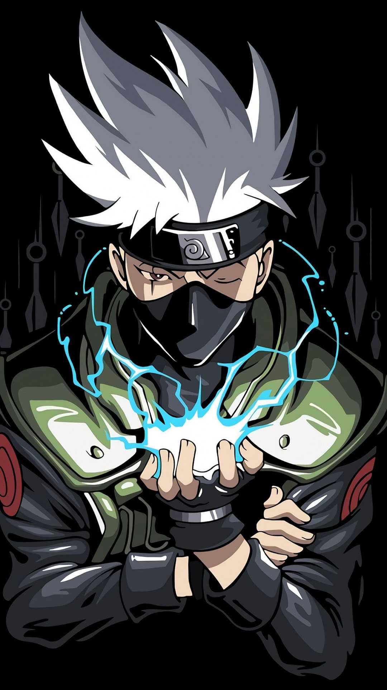
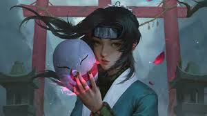

About the Game
Naruto to Boruto: Shinobi Striker is one of the best anime fighting games available on PlayStation 5.
The graphics are amazing, the characters feel very similar to the anime, and the multiplayer battles are exciting.
My favorite characters are Minato Namikaze and Madara Uchiha.
Advantages
- Excellent graphics
- Many playable characters
- Fun missions
- Ranked mission system
- Online multiplayer
- Special ninja techniques
- Smooth gameplay
Mission Ranks
| Rank |
Description |
| Training |
Learn the basics |
| E Rank |
Easy beginner missions |
| D Rank |
Basic combat missions |
| C Rank |
Intermediate missions |
| B Rank |
Hard battles |
| A Rank |
Very difficult missions |
| S Rank |
Expert ninja challenges |
Main Characters

Naruto Uzumaki (Six Paths Sage Mode)
- Rasen Shuriken
- Truth Seeking Orbs
- Kurama Link Mode (Ultimate)

Sasuke Uchiha
- Chidori Sharp Spear
- Inferno Style
- Kirin (Ultimate)

Minato Namikaze
- Flying Raijin
- Flying Raijin Level 2
- Rasengan

Boruto (Karma)
- Karma Linchpin
- Vanishing Rasengan
- Karma Seal Release

Kakashi Hatake
- Kamui Lightning Blade
- Kamui Bond
- Kamui Shuriken

Haku
- Ice Style: Icicle Swallow
- Thousand Needles of Death
- Crystal Ice Mirrors
Disadvantages
- Offline mode becomes repetitive after completing all missions.
- Quick Match is unavailable offline.
- Some characters are stronger than others.
- Attack-type characters have weaker defense.